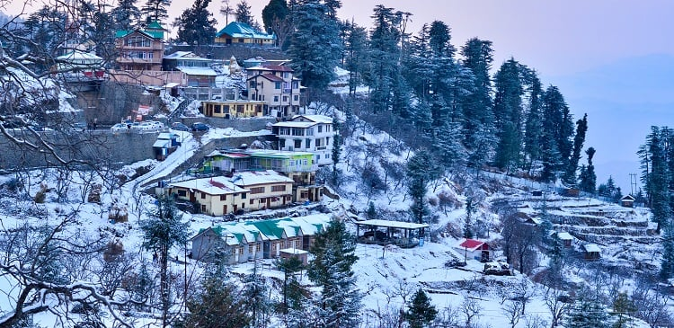
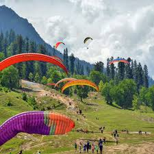
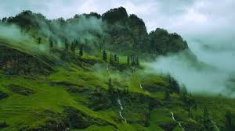

Shimla

Shimla, the capital city of Himachal Pradesh, is a popular hill station
known for its colonial architecture, Mall Road, and snow-capped mountains.
- ⏰ Best Time: March – June, December – January (for snow)
- 💰 Budget: ₹6,000 – ₹10,000 (3 days)
- 👨💼 Guide: Not necessary, local guides available
- 🌤️ Weather: Cool, 5°C – 25°C depending on season
- 📍 Location: Himachal Pradesh, India
Manali

Manali is a stunning hill station famous for adventure sports,
snow activities at Solang Valley, and the scenic Rohtang Pass.
- ⏰ Best Time: October – February (snow), March – June (pleasant weather)
- 💰 Budget: ₹7,000 – ₹12,000 (4 days)
- 👨💼 Guide: Available for trekking and adventure sports
- 🌤️ Weather: Cold, -2°C – 20°C in winter
- 📍 Location: Himachal Pradesh, India
Kullu

Kullu is known as the “Valley of Gods,” famous for its Dussehra festival,
scenic valleys, and river rafting in the Beas River.
- ⏰ Best Time: September – November, March – June
- 💰 Budget: ₹4,000 – ₹7,000 (2 days)
- 👨💼 Guide: Local guides available for festivals and trekking
- 🌤️ Weather: Pleasant to cold, 8°C – 25°C
- 📍 Location: Himachal Pradesh, India